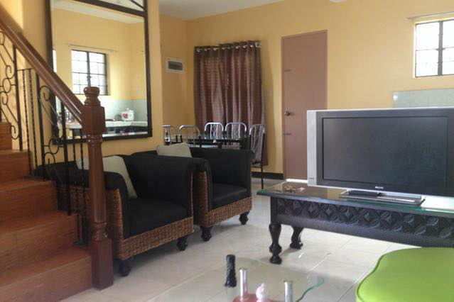
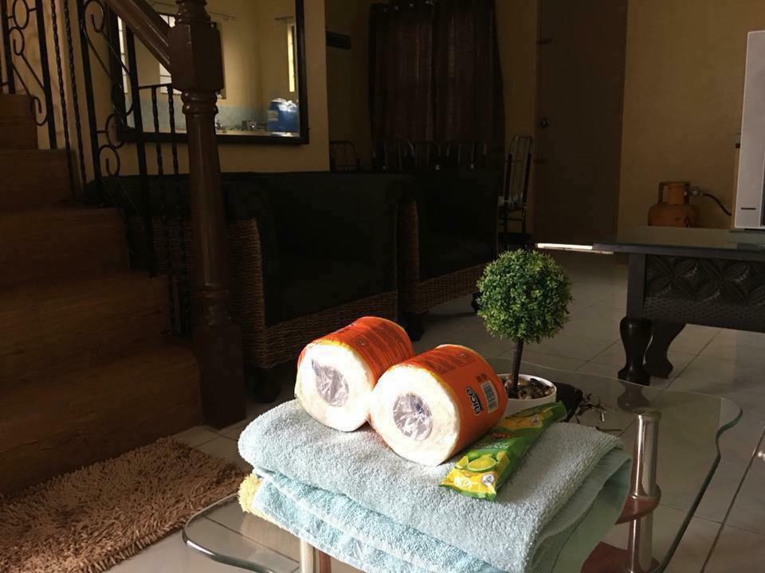
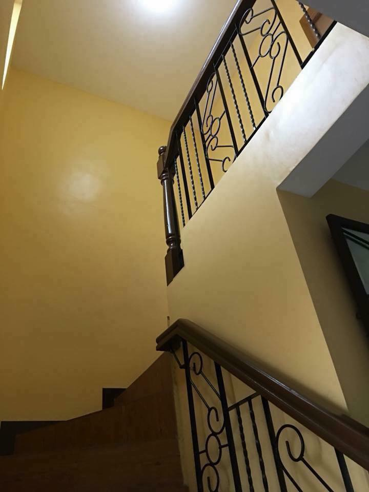
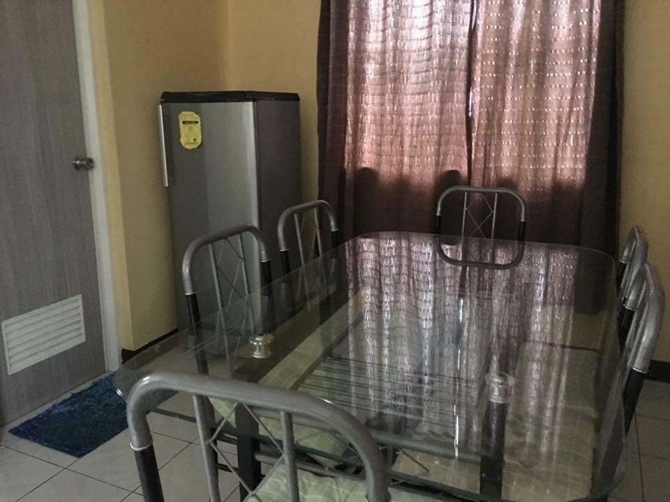

- RETURN
TRANSIENT HOUSE LIPA BATANGAS
Stay relax in our house at Lipa City with the cool breeze like in Tagaytay! And enjoy the beauty of Batangas! Our beautiful home is very near to resorts (Shercon and La Virginia), Bee Farm, Marian Orchard Church, Carmel and Lipa Catheral. With your friends and family you can enjoy the joy ride to the beautiful scenery of Taal Lake and Volcano in nearby town of Balete Batangas.
   Copyright & Copy 2018; All Right Reserved | grace travel & tour services